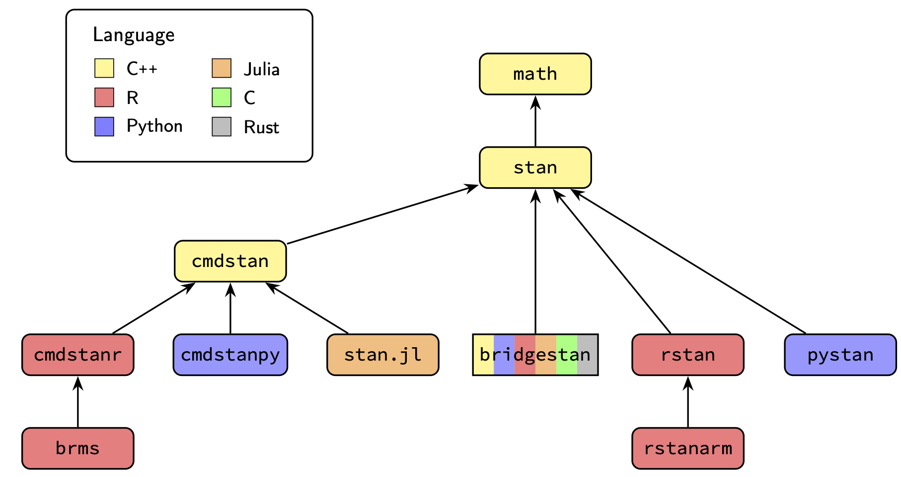

The Stan Ecosystem
Stan is a domain-specific programming language for specifying probabilistic models along with a collection of algorithms for performing statistical inference and analyzing model fits.
What is the Stan User’s Guide?
This document, the Stan User’s Guide, is intended to explain techniques for statistical modeling using the Stan modeling language. As such, it concentrates on the Stan language itself and does not discuss any of the Stan interfaces that are required to actually use Stan (see below).
Who uses Stan?
You can find Stan users and example code online from almost every subfield of science and most branches of statistics other than highly non-parametric modeling (e.g., neural networks, high-dimensional Dirichlet processes), highly coupled discrete models (e.g., Ising models), huge scale (e.g., e-commerce, global weather models), and real-time processing (e.g., quad-copter control).
Stan applications have been drawn from pretty much every branch of biological science (from cellular to population ecology and zoology), physical sciences (from quantum to astro), social sciences (psychometrics, surveys, economics, and anthropology), engineering (from civil to mechanical), educational sciences (testing), medical sciences (from epidemiology to clinical trials), sports statistics (pretty much every major sport, plus bookmaking), finance (asset pricing, risk assessment, forecasting), business (advertising attribution, demand and pricing), and actuarial sciences.
User and developer communities
Stan’s strongest feature is its active community of users. Stan’s users hail from a wide range of mathematical and statistical backgrounds and work in a broad range of application areas.
The primary Stan discussion board is hosted by Discourse.
- Stan Forums, where users and developers discuss issues with Stan and its applications.
The Stan developers discuss designs, plans, and communicate with each other through the forums and also on GitHub. Users can also access it and make feature requests or report bugs.
- Stan GitHub, which tracks issues and contains the complete source code for Stan (the core is licensed under BSD-3).
Both developers and users attend Stan conferences, which are a mix of tutorials, talks about applications, and talks from the Stan developers about where Stan is going.
- StanCon, which is where you’ll find the talks, slides, and executable notebooks.
How is the project organized?
Stan is free open source software released under permissive licenses (BSD-3 for the core code). There are no institutional owners and no institutional oversight of the project.
The Stan project as a whole is managed through the Stan Governing Body (SGB), who have final say on all things Stan related. They also organize StanCon. The members are elected by the developers and rotate through short (1–2 year) terms.
Software development is managed through Apache-style voting among the developers. Lack of consensus is so rare there have only been a few votes in the history of the project aside from electing SGB members.
Since development of Stan began in 2011 (the first release was in 2012), funding has been provided through governmental grants across multiple agencies in several countries, through non-profit foundations, through universities, through donations from corporations, and through in-kind donations of time by our developer’s employers. Thank you!
Documentation
Core Stan language documentation
Stan’s core internal documentation for the Stan language is organized through a top-level web page.
You are currently reading the Stan User’s Guide, which is complemented by the Reference Manual and Functions Reference. These are all interface-agnostic guides to the Stan language and its execution. They are available online with integrated navigation and also as pdfs.
Case studies
Stan case studies cover specific models or techniques with reproducible code (usually in Python or R). They can be found in the devoted page of case studies or through StanCon presentations.
Interface documentation
Stan provides several interfaces for compiling Stan models, performing inference, and analyzing the results. Each supplies its own documentation.
CmdStan is the reference implementation of Stan and is coded entirely in C++.
- Command line: CmdStan User’s Guide
It includes tools for posterior analysis.
CmdStanPy, CmdStanR, and Stan.jl make system calls to CmdStan out of process.
Python: CmdstanPy Users’s Guide
PyStan and RStan call Stan code directly through C++.
Python: PyStan User’s Guide
BridgeStan is the cross-platform interface for accessing Stan language components, including (unconstrained) log densities, gradients, and Hessians, as well as parameter transformations and the posterior predictive simulations required for generated quantities.
- Python, R, C, Rust: BridgeStan User’s Guide
BridgeStan is implemented through low-level foreign function interfaces that link to the compiled C++ class for a Stan program and the Stan math library.
Documentation source code web site
Stan’s core documentation is also maintained on GitHub, with package-specific documentation maintained in the same repository as the code.
docs(Quarto markdown): where this document’s source is hosteddesign-docs(GitHub markdown): where the developers discuss designs
Web site source code
The Stan web site, https://mc-stan.org, is managed through GitHub.
stan-dev.github.io(Markdown, YAML):mc-stan.orgweb site
Further documentation resources
In addition to the documentation maintained by the development team, there are many resources available online from the community including books, video courses, talks, papers, and case studies.
Core C++ and interface organization

The projects shown in Figure 1 are just the tip of the iceberg. Stan is organized into more than fifty GitHub repositories, all of which can be found in the following location.
- GitHub organization for Stan’s source code and documentation:
stan-dev
Higher-level Stan interfaces: brms and rstanarm
The Stan project also maintains two high-level interfaces to Stan, brms and rstanarm. These both use R’s expression language for regressions to allow users to write Bayesian models in a natural way while compiling down to well-implemented Stan programs on the back end.
- Bayesian regression models using Stan:
brms - Bayesian applied regression modeling (arm) via Stan:
rstanarm
Although they cover slightly different model families, the main difference is that rstanarm does not require a C++ toolchain to compile models, whereas brms does. This makes rstanarm much easier to install and distribute.
Many other individuals and companies have built tools that depend on the core Stan language or packages, many of which are available open source. These handle everything from compartment pharmacometric/pharmacodynamic models (torsten) to structural equation models (blavaan) to general additive models for time series (prophet).
Programming language
Stan provides a domain-specific language for specifying smooth, data-dependent target density functions on the logarithmic scale. Stan is a differentiable programming language, meaning that Stan can automatically take first, second, and even higher-order derivatives of any log density it defines. Stan is also a probabilistic programming language in that its variables represent random variables and constants (at least when viewed from the Bayesian perspective).
Under the hood, Stan uses a standard programming language stack of parser, intermediate representation layer, and code generator. These are all written in the OCaml programming language. The code generator produces a C++ class implementing the model defined by the Stan program.
The code for the parser, intermediate representation, and C++ code generator is maintained in its own repository.
stanc3(OCaml): Stan language compiler
For Bayesian applications, the target log density will be the posterior log density function (up to an additive constant). For frequentist applications, it will be a penalized likelihood function. Stan also provides a method for efficiently coding posterior predictive quantities through simulation.
IDE support
Stan provide syntax highlighting and integrated development environment (IDE) support as outlined on the following page.
Stan math library
The C++ class produced by the stanc3 compiler depends on the Stan Math Library. The math library implements differentiable arithmetic operations, matrix and linear algebra operations, special mathematical functions, and special statistical functions. The Stan math library itself has four dependencies in addition to C++ itself,
tbb: Intel Thread Building Blocks for thread management including pools and synchronization,boost: Boost for general C++ tooling, special functions, random number generators, and densities.Eigen: Eigen for templated general matrix operations and linear algebra solvers, andsundials: Suite of nonlinear and differential/algebraic equation solvers (SUNDIALS).
The math library can call out to GPU for some operations (e.g., Cholesky factorization or matrix-matrix multiplication), but overall, it has been much more heavily optimized for CPUs. When using GPUs, there is a further dependency.
OpenCL: Open Computing Language (OpenCL) for GPU management.
Additional R packages
Stan provides a dedicated tool for posterior summarization and analysis in R,
posterior(R): posterior analysis tools
along with complementary plotting components,
bayesplot(R): plotting tools
There is a tool for cross-validation.
loo(R): approximate leave-one out cross-validation
There is a dashboard for visualizing and analyzing posterior results.
shinystan(R): dashboard for exploring Stan model fits
And there is a package
rstantools(R): tools for developing R packages interfacing with Stan
Python package ArviZ for downstream analysis
The Stan project doesn’t maintain its own Python packages for downstream analysis, however it can interface directly with ArviZ. ArviZ is Python library which provides diagnostics and visualizations for Bayesian workflow. The function from_cmdstanpy accepts a CmdStanPy MCMC object and provides the Python equivalent of the functions in the R packages posterior, bayesplot, and loo.
Stan inference engines
Stan supports inference for probability models through general, model-agnostic sampling techniques.
Markov chain Monte Carlo
Stan’s default inference method is Markov chain Monte Carlo sampling using the no-U-turn sampler (NUTS). supports two Markov chain Monte Carlo (MCMC) methods. There is more detail in the reference manual.
- MCMC (Reference Manual)
Variational inference
Stan also includes the following two approximate inference techniques based on variational inference,
Automatic differentiation variational inference (Reference Manual)
Pathfinder variational inference (Reference Manual)
Laplace approximation
Stan also supplies an approximate method based on optimization and curvature.
- Laplace approximation (Reference Manual)
Optimization for maximum likelihood and maximum a posterior estimation
Stan supplies industry-standard optimization methods, which can be used for maximum likelihood estimates and as the basis for Laplace approximations. Stan supplies standard Newton optimization, BFGS, and L-BFGS.
Stan can estimate confidence intervals through the bootstrap as explained in the posterior inference and model checking part of this document.
Background reading on Bayesian Statistics and Stan
This section links some resources for getting started with Bayesian statistics using Stan. The first two recommendations are for introductions to Bayesian statistics using Stan, a complete hands-on introductory textbook and shorter introductory article.
Statistical Rethinking: A Bayesian Course with Examples in R and Stan, Second Edition. 2020. Richard McElreath. CRC Press.
Getting started with Bayesian statistics using Stan and Python. 2023. Bob Carpenter.
The next step to understanding Bayesian statistics more deeply after these introductory texts is BDA3, a free pdf for which is available from the linked web site.
- Bayesian Data Analysis, Third Edition. 2013. Andrew Gelman, John Carlin, Hal Stern, David Dunson, Aki Vehtari, and Donald Rubin. CRC Press.
Model building and inference, as supplied by Stan, are only two pieces in a bigger toolchain needed for effective applied statistical modeling. The bigger picture extends to exploratory data analysis, model construction and choice, algorithm calibration checking, prior and posterior predictive checking, plotting and visualization, and results presentation. The following short article and book provide advice on this broader statistical workflow from a Bayesian perspective with worked examples in Stan.
Statistical workflow. 2026. Andrew Gelman, Aki Vehtari, Richard McElreath. Philosophical Transactions of the Royal Society A.
Bayesian Workflow. 2026. Andrew Gelman, Aki Vehtari, Richard McElreath, Daniel Simpson, Charles C. Margossian, Yuling Yao, Lauren Kennedy, Jonah Gabry, Paul-Christian Bürkner, Martin Modrák, Vianey Leos Barajas. Cambridge University Press.